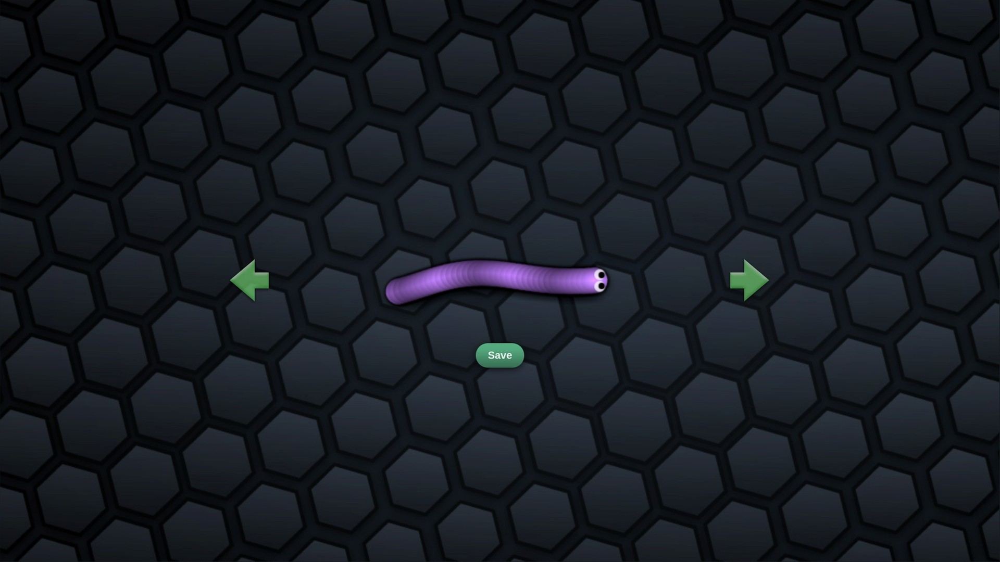

<DOCTYPE html>
<html>
    <head>
        <meta charset="utf-8" />
        <title>My page</title>

        <link href="styles/style.css" rel="stylesheet" type="text/css" />
        <link 
        href="http://fonts.googleapis.com/css?family=Noto+Sans+TC" 
        rel="stylesheet" 
        type="text/css" 
        />
       
        
<body>
    <h2> 貪吃蛇 </h2>
    <h2 id="pop" ></h2>
    
    
    <p>貪吃蛇的三大特點  </p>

   <ul>
    <li>吃食物增長：貪吃蛇的目標是吃掉遊戲場景中的食物，每吃掉一個食物，貪吃蛇的身體就會增長一節。 </li>
    <li>蛇身追蹤：在貪吃蛇遊戲中，蛇的身體會遵循特定的軌跡或路徑，以追蹤和跟隨蛇頭的移動方向。</li>
    <li>生死循環：貪吃蛇是一款無盡的遊戲，直到蛇頭碰到自己的身體或遊戲場景的邊界才會結束遊戲。</li>
   </ul>

  <a href="https://zh.wikipedia.org/zh-tw/%E8%B4%AA%E9%A3%9F%E8%9B%87">
    wiki介紹
  </a>
  <script src="./scripts/main.js"></script>


</body>

 

</html>